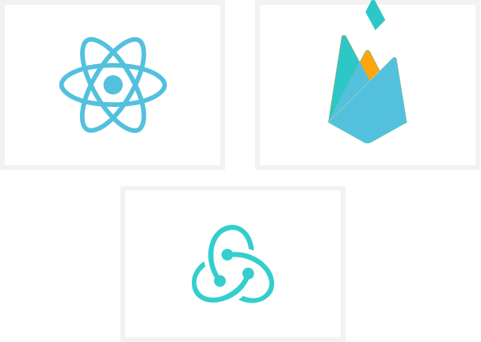
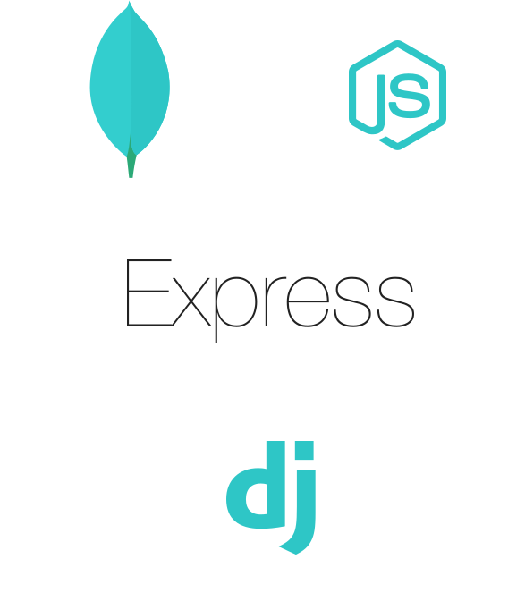

👋
Who am I?
My name is Hileamlak Mulugeta Yitayew. A senior high school student in Ethiopia. I am interested in many things, but mostly in physics and Cs. If you think about it they are alike. Physics studies about how the universe in general works and CS studies about another universe (a one which we created). These two fields are vast and have a lot of room for discovery and learning. On top of that, having Cs skills will help anyone start a small business at the least. That in short is why I like these two fields.
As you know, the pandemic has caused a lot of things to go wild. One of those things is school education. Because my high school education has been interrupted for the last 6 months, I will not go to college until September 2021. Which actually is great in a way as it has opened up new opportunities for me. As I told you, I want to study CS and physics in college, so I thought why not reduce the workload I will be facing by doing some of it now. That is why I started learning web development. In the long run, I want to be a data scientist mainly focused on modeling physical systems. But I thought web programming is a nice way to start and also it will be helpful as I have some project ideas that need web technologies.
I have been using my time to learn some front end technologies from free online resources. So far I have recapped and also learned HTML, CSS, Js, Jquery, SCSS, and a bit of bootstrap. Not only that I have familarized my self with git, and linux systems. Currently, I am learning React and I hope to continue developing my front end skills with different projects.
Learning from documentation and free resources online is nice and all, but sometimes it is really hard. And I couldn't have heard about this program at any better time. Having someone to guide in a way that makes learning easy is priceless. Especially when what you are learning are the actual standards of the industry. Learning React from the documentation taught me how to use React. But it didn't teach me how people are actually using it in real life, what the trends, the pitfalls and so on are. So I was delighted when I heard about this program. Though I was late, I tried to apply as soon as possible. I was planning to move on to the back end development as soon as I finish mastering the front ends. This couldn't have happened at any better time. I hope to learn the backend development with your guidance while I keep learning the front ends of the resource I am currently using. As soon as I feel like I am ready with the front ends I want to get started with some freelancing job to just have a feel of the working population as it will also prepare me for my after college career. The back ends are for sure going to be invaluable in helping me advance in this work as these days a web developer is expected to know more than HTML and CSS. I hope I will join you!
Visual Map
What I know?

I know the basics. HTML, CSS, JS, Jquery, basic bootstrap(haven't made a project with it yet), and SCSS

What I am learning?
I am currently learning react from freecodecamp.org, youtube and stackoverflow and working on of a serverless web app that uses firebase (learning in the way).
What I want to learn next with you?
I want to master the MERN stack. as I already have a good understanding of javascript it would be easier for me to learn express and node. So I am hoping that your back end program involves this. I also want to have some general expreience with other backend frame Works like django. Incease what you are teaching for backend are totally unrealted to what I am planing to learn then may be you can help me master the front ends.